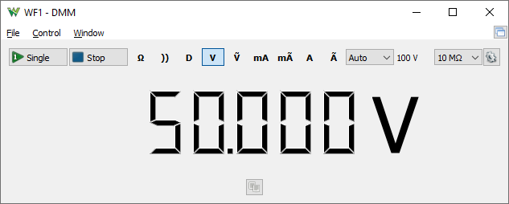

The DMM is available with ADP5250 device.

The single button performs one measurement and the run/stop start continuous measurements.
The measurement mode can be selected between: Diode, Continuity, DC, AC voltage, DC, AC low current and DC, AC high current.
The range can be set to auto or manually specified.
For DC voltage the input impedance can be selected between 10MΩ and 10GΩ
Under options, the averaging time and the update rate can be set.
For more information see ADP5250 DMM.